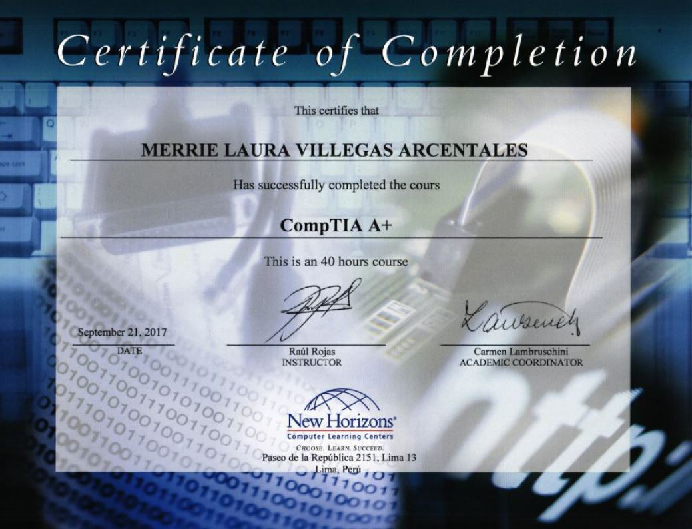

Este es mi portafolio personal donde combino diseño y código para mostrar mi progreso académico y profesional.
Soy estudiante del 7° ciclo de Ingeniería de Sistemas e Informática. Actualmente, como parte del curso de Construcción de Software, estoy enfocándome en el desarrollo de habilidades en programación, buscando crear con detalle, color y armonía.
Esta sección busca reflejar mis habilidades técnicas y capacidad para documentar soluciones prácticas que he utilizado a lo largo de mi vida profesional.
Soluciones aplicadas a incidencias comunes: redes, formateo, instalación de sistemas operativos, antivirus, impresoras y más.
Consultas SQL, procedimientos y estructuras de base de datos diseñadas en Oracle 19c como parte de mis prácticas académicas.
Productos Académicos desarrollados durante el curso.
Estos son algunos de los certificados que he obtenido:
